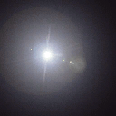
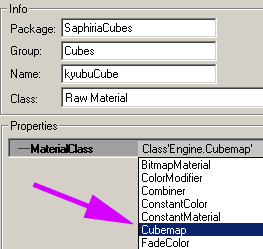
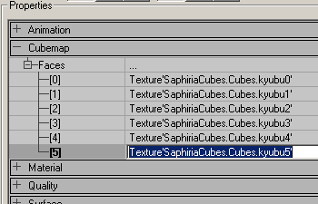
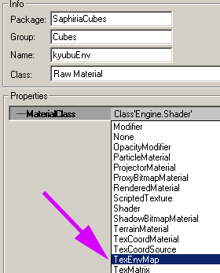
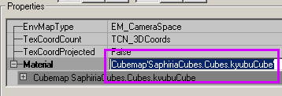
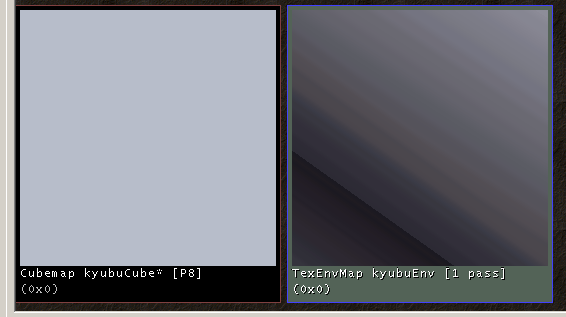

Cubemap
A Cubemap consists of 6 textures that form like that of a cube when placed in respective places in an unassembled box. Cubemap textures are generally made two ways:
- A lens flare or some white or coloured blotch in the center of the texture which is then set as part of the cubemap texture six times.
- Using various map textures that creates an actual cube. Almost like how SkyBox textures are made up of.
Quick Tutorial
- Open your favourite Graphics Application.
- Create a blank square texture with a black background. Food for thought: these textures should be the size in powers of 2 eg. 128x128, 256x256 ...however, it shouldn't be larger than 256x256. Just think of the texture usage. 1024x1024x6 = Holy Crap!
Slap a lense flare on it with a random intensity. Here's mine:
CubeMap Texture! w00t!
- Import the texture: you need same texture 6 times in the texture browser but use an incremental count from 0 to 5.
Make a new texture and make sure the Name is uniquely named from other textures and the MaterialClass is set to CubeMap:
Settings!
In the new properties window, you can reference the name of the cube textures like so:
This is a place-holder for the cube textures.
For reference, you can just type the name of the texture (in the example above, "kyubu0") and Ued will expand the name to its technical name.
Since most CubeMap textures are used as an environment texture, let go turn it into an Environment map texture. Close that properties window and lets make a new texture with a different MaterialClass setting.
That new setting is TexEnvMap
Make the material reference the CubeMap like so:
In that example, I just typed "kyubuCube" and it expanded the name for me.
If have you done everything right, you should now end up with 6 textures, 1 CubeMap, and 1 TexEnvMap:
The two final textures.
Now when ever you want to reference the Cubemap into your map, the texture to reference would be the "TexEnvMap" instead of the "CubeMap".
Related Topics

Comments
- please reuse images from elsewhere in the site when possible
- link to BP pages when relevant
EricBlade: What is this used for?